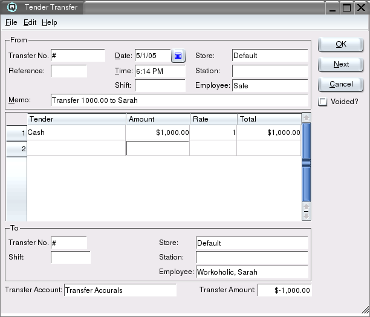

Tender Transfer

The "Tender Transfer" is used to tranfer tender amounts from one station
to another in the cash reconciliation process. For example,
you can transfer tender amounts from a point-of-sale device to a safe,
or you can transfer funds from a safe to a bank account.
From
-
- Transfer Number - The Quasar selects the next transfer
number available. Quasar creates tender adjustment for each of the
"From" and the "To" work stations.
- Store - Enter the from store for the transfer.
- Date - The date for the tender transfer. The date determines the
accounting period in which the transfer adjustments will be posted.
- Station - The station (work station) on which the tender
transfer is created.
- Time - The time that the tender transfer is created.
- Employee - The employee creating the tender transfer.
- Reference - A number that references the tender transfer.
- Shift - The shift that the tender transfer is linked to
through a shift close.
- Memo - Defines the tender transfer.
Tender Entry Table
-
- Tender - The name of the tender.
- Amount - The amount of each tender.
- Rate - The foreign exchange conversion rate for the tender.
- Total - The total amount of the tender.
To
-
- Transfer No - The Quasar transfer screen creates an
tender adjustment in both the "From" station and the "To" station.
- Store - The store where the tenders are being tranferred to.
- Shift - The shift the transfer is linked to. For example, the shift close for the safe.
- Station The name of the station the tenders are being
transferred to (required if using the "Station" method of cash
reconciliation).
- Employee The name of the employee the tenders are being
transferred to (required if using the "Employee" method of cash
reconciliation).
Transfer Account
Enter an transfer account to post the transfer accrual to.
Transfer Amount
The amount of the tender transfer.
Voided?
Toggle on or off. Toggle on to void the transaction. Toggle off to
reinstate the transaction.